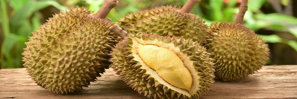
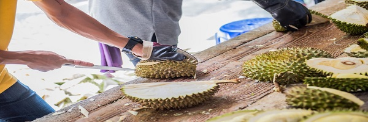
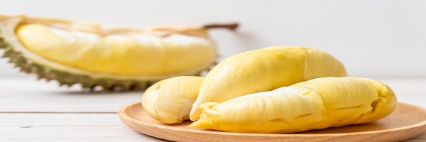

October 22, 2019
Durian Prices Surge
Known as the “king of fruits”, Durian is something of luxury product in China. As such, the price of durian reflects its status—high. Hence, many durian lovers’ cravings go unsatisfied. Entering June, durian has reached its peak season. A month ago, the retail price of durian was about USD 11.76 per kg. The price has dropped by more than half, to below USD 5.88 per kg. On e-commerce platforms, the sales price is between USD 1.76-2.06 per kg, arguably the lowest price in history. Abundant harvest in main durian growing areas is responsible for this price drop.
Continue reading...
September 18, 2019
The Earliest Durian Seller
Just like the small hand-painted sign promised, the durians at Toto Willy’s were fresh. And they were tree-dropped. And the uncle selling durians there was so nice and good at choosing bitter, wrinkly, satisfying Arancillo.
Continue reading...
March 14, 2019
The World's Smelliest Fruit
Due to its overpowering smell, durian has been banned on many types of public transport across Thailand, Japan and Hong Kong. In Singapore, the fruit is banned across all types of public transportation and even taxis have signs to let you know they refuse to carry passengers transporting the smelly fruit.
Continue reading...